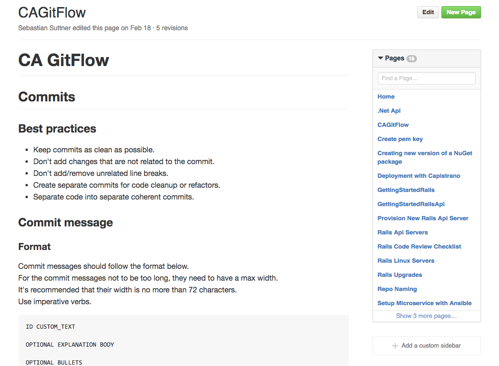

sqlserver-sequence
An Open-Source Journey
Basic Usage
class Checkout < ActiveRecord::Base sequence :order_id end$ checkout = Checkout.create $ checkout.order_id > 1$ other_checkout = Checkout.create $ other_checkout.order_id > 2
Options
class Checkout < ActiveRecord::Base sequence :order_id, name: 'contract_id', prefix: 'CT-', format: lambda { |n| n.rjust(8, 0) } end$ checkout = Checkout.create $ checkout.order_id > "CT-00000001" # generated by sequence named 'contract_id'$ other_checkout = Checkout.create $ other_checkout.order_id > "CT-00000002"
Research

Designing For Open-source
Naming
What's in a name?
- sequence
- sequencer
- sequenced
- acts_as_sequence
Rubygems
Naming Guidelines
sqlserver-sequence
Getting Started
Bundler
> bundle gem sqlserver-sequencecreate sqlserver-sequence/Gemfile create sqlserver-sequence/Rakefile create sqlserver-sequence/LICENSE.txt create sqlserver-sequence/README.md create sqlserver-sequence/.gitignore create sqlserver-sequence/sqlserver-sequence.gemspec create sqlserver-sequence/lib/sqlserver/sequence.rb create sqlserver-sequence/lib/sqlserver/sequence/version.rb Initializing git repo in /Users/zwelch/sqlserver-sequence
Design Your Interface
class Checkout < ActiveRecord::Base self.sequence_field = 'order_id' endclass Checkout < ActiveRecord::Base acts_as_sequence :order_id endclass Checkout < ActiveRecord::Base sequence_number :order_id endclass Checkout < ActiveRecord::Base sequenced :order_id endclass Checkout < ActiveRecord::Base sequence :order_id end
class Checkout < ActiveRecord::Base sequence :order_id, sequence_name: 'OrderNumber', sequence_prefix: 'CT-' endclass Checkout < ActiveRecord::Base sequence :order_id, name: 'OrderNumber', prefix: 'CT-' endclass Checkout < ActiveRecord::Base sequence :order_id, name: 'OrderNumber', prefix: 'CT-', format: lambda { |n| n.rjust(8, 0) } endclass Checkout < ActiveRecord::Base sequence :order_id, name: 'OrderNumber', prefix: 'CT-', format: lambda { |n| n.rjust(8, 0) } sequence :purchase_order end
Why dedicate time up-front?
- quickly go through different use cases
- giving expression to your gem
- developer experience
- apis are expensive to change
- 0 lines of code
The Code
TDD now
You'll Thank Yourself Later :)
Names are worth their weight in $gold$
Convention Over Configuration
Documentation
> bundle gem sqlserver-sequence
create sqlserver-sequence/Gemfile
create sqlserver-sequence/Rakefile
create sqlserver-sequence/LICENSE.txt
create sqlserver-sequence/README.md
create sqlserver-sequence/.gitignore
create sqlserver-sequence/sqlserver-sequence.gemspec
create sqlserver-sequence/lib/sqlserver/sequence.rb
create sqlserver-sequence/lib/sqlserver/sequence/version.rb
Initializing git repo in /Users/zwelch/sqlserver-sequence

Pitfalls
Testing

Releasing
> bundle gem sqlserver-sequence
create sqlserver-sequence/Gemfile
create sqlserver-sequence/Rakefile
create sqlserver-sequence/LICENSE.txt
create sqlserver-sequence/README.md
create sqlserver-sequence/.gitignore
create sqlserver-sequence/sqlserver-sequence.gemspec
create sqlserver-sequence/lib/sqlserver/sequence.rb
create sqlserver-sequence/lib/sqlserver/sequence/version.rb
Initializing git repo in /Users/zwelch/sqlserver-sequence
Giving Back
Reporting issues is a huge help
Documentation including examples
Contribute to a gem you use a lot
Open a PR for a fix you added
GitFlow Helps!
Community makes open source work
Why are stars important?
- Shows appreciation
- Encourages more activity
- Let's others know you were successful
- Elevates project status
- Furthers adoption
- Increases contributions
Doesn’t require significant time or genius intellect
“Designing a new language or web framework may take inspiration, but the rest of what makes projects like Rails successful is perspiration.”